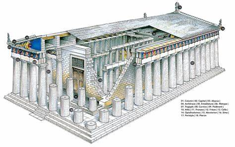
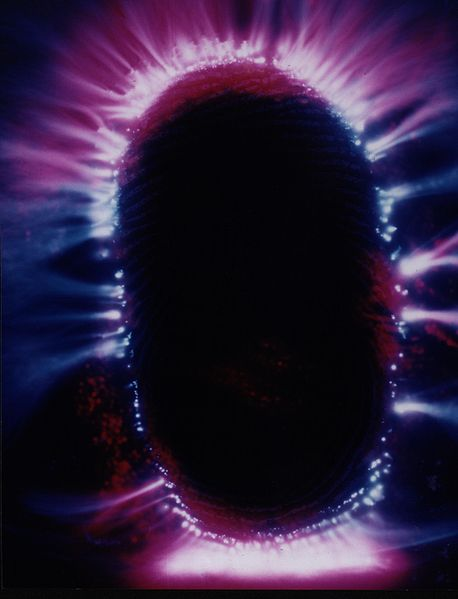
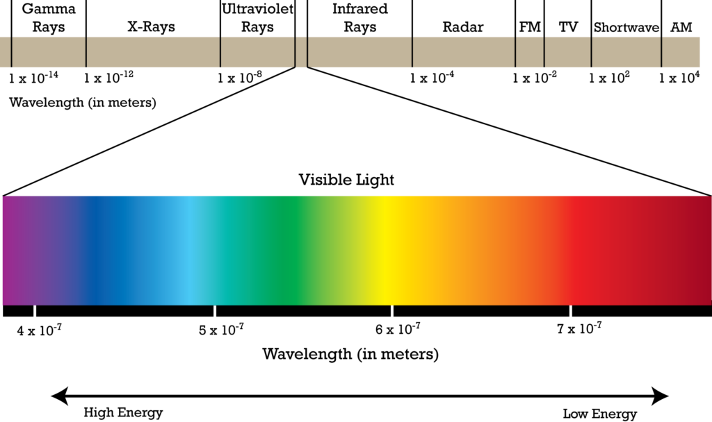

Multiple Part Post
This post is a multiple part post. I have labeled them…
- The Geography of Heaven; Journey of Souls – 1a
- The Geography of Heaven; Journey of Souls – 1b
- The Geography of Heaven; Journey of Souls – 1c – This post.
- The Geography of Heaven; Journey of Souls – 1d
- The Geography of Heaven; Journey of Souls – 1e
Case 16
Dr. N: Once you leave the staging area and have arrived in the spiritual space where you belong, what do you do then?
S: I go to school with my friends.
Dr. N: You mean you are in some kind of spiritual classroom?
S: Yes, where we study.
Dr. N: I want you to take me through this school from the time of your arrival so I can appreciate what is happening to you. Start by telling me what you see from the outside.
S: (with no hesitation) I see a perfectly square Greek temple with large sculptured columns-very beautiful. I recognize it because this is where I return after each cycle (life).

Dr. N: What is a classical Greek temple doing in the spirit world?
S: (shrugs) I don’t know why it appears to me that way, except it seems natural … since my lives in Greece.
Dr. N: All right, let’s continue. Does anyone come to meet you?
S: (subject smiles broadly) My teacher Karla.
Dr. N: And how does she appear to you?
S: (confidently) I see her coming out of the entrance of the temple towards me… as a goddess … tall … wearing long flowing robes … one shoulder is bare … her hair is piled up and fastened with a gold clasp … she reaches out to me.
Dr. N: Look down at yourself. Are you dressed in the same garments?
S: We… all seem to be dressed the same … we shimmer with light… and we can change … Karla knows I like the way she looks.
Dr. N: Where are the others?
S: Karla has taken me inside my temple school. I see a large library. Small gatherings of people are speaking in quiet tones… at tables. It is … sedate … warm … a secure feeling which is so familiar to me.
Dr. N: Do all these people appear as adult men and women?
S: Yes, but there are more women in my group.
Dr. N: Why?
S: Because that’s the valence they are most comfortable with right now.
Note: The word valence used by this subject to indicate gender preference is an odd choice, yet it does fit. Valences in chemistry are positive or negative properties which, when combined with other elements, give proportion. Souls in groups may be inclined toward male and female personages or mixed.
Dr. N: Okay, what do you do next?
S: Karla leads me to the nearest table and my friends immediately greet me. Oh, it’s so good to be back.
Dr. N: Why are these particular people here with you in this temple?
S: Because we are all in the same study group. I can’t tell you how happy I am to be with them once more. (subject becomes distracted with this scene and it takes me a minute to get her started again)
Dr. N: Tell me how many people are in this library with you?
S: (pauses while mentally counting) About twenty.
Dr. N: Are all twenty very close friends of yours?
S: We are all close-I’ve known them for ages. But five are my dearest friends.
Dr. N: Are every one of the twenty people at about the same level of learning?
S: Uh… almost. Some are a little further along than the rest.
Dr. N: Where would you place yourself in the group as far as knowledge?
S: Around the middle.
Dr. N: As to learning lessons, where are you in relation to your five closest friends?
S: Oh, we are about the same-we work together a lot.
Dr. N: What do you call them?
S: (chuckles) We have pet names for each other.
Dr. N: Why do you have nicknames?
S: Hmm … to define our essence. We see each other as representing earth things.
Dr. N: What is your pet name?
S: Thistle.
Dr. N: And this represents some personal attribute?
S:(pause)I… am known for sharp … reactions to new situations in my rotations (life cycles).
Dr. N: What is the entity you feel closest to called, and why?
S: (soft laughter) Spray. He goes flat out in his rotations … dispensing his energy so rapidly it splashes in all directions, just like the water he loves so much on Earth.
Dr. N: Your family group sounds very distinctive. Now would you explain to me what you and your friends actually do in this library setting?
S: I go to my table and we all look at the books.
Dr. N: Books? What sort of books?
S: The life books.
Dr. N: Describe them as best you can for me.
S: They are picture books-thick white edges-two or three inches thick-quite large …
Dr. N: Open one of the life books for me and explain what you and your friends at the table see.
S: (pause, while the subject’s hands come together and move apart as though she were opening a book) There is no writing. Everything we see is in live pictures.
Dr. N: Action pictures-different than photographs?
S: Yes, they are multi-dimensional. They move… shift… from a center of … crystal … which changes with reflected light.
Dr. N: So, the pictures are not flat, the moving light waves have depth?
S: That’s right, they are alive.
Dr. N: Tell me how you and your friends use the books?
S: Well, at first it’s always out of focus when the book is opened. Then we think of what we want, the crystal turns from dark to light and … gets into alignment. Then we can see … in miniature… our past lives and the alternatives.
Dr. N: How is time treated in these books?
S: By frames … pages … time is condensed by the life books.
Dr. N: I don’t want to dwell on your past right now, but take a look at the book and just tell me the first thing you see.
S: A lack of self-discipline in my last life because this is what is on my mind. I see myself dying young, in a lover’s quarrel-my ending was useless.
Dr. N: Do you see future lives in the life book?
S: We can look at future possibilities … in small bites only … in the form of lessons … mostly these options come later with the help of others. These books are intended to emphasize our past acts.
Dr. N: Would you give me your impression of the intent behind this library atmosphere with your cluster group?
S: Oh, we all help one another go over our mistakes during this cycle. Our teacher is in and out and so we do a lot of studying together and discuss the value of our choices.
Dr. N: Are there other rooms where people study in this building?
S: No, this is for our group. There are different buildings where various groups study near us.
Note: The reader may refer to Figure 1 (page 89), circle B, as an example of what is meant here. In the graph, clusters 3-7 represent infrequent group interaction, although they are in close proximity to each other in the spirit world.
Dr. N: Are the groups of people who study in these buildings more or less advanced than those in your group?
S: Both.
Dr. N: Are you allowed to visit these other buildings where souls study?
S: (long pause) There is one which we go to regularly.
Dr. N: Which one?
S: A place for the newer ones. We help them when their teacher is gone. It’s nice to be needed.
Dr. N: Help them how?
S: (laughs) With their homework.
Dr. N: But don’t the teacher-guides have that responsibility?
S: Well, you see the teachers are … so much further along (in development) … this group appreciates our assistance because we can relate to them easily.
Dr. N: Ah, so you do a little student teaching with this group?
S: Yes, but we don’t do it anywhere else.
Dr. N: Why not? Why couldn’t more advanced groups come to your library to assist you once in a while?
S: They don’t because we are further along than the newer ones. And, we don’t infringe on them either. If I want to connect with someone, I do it outside the study center.
Dr. N: Can you wander about anywhere as long as you don’t bother other souls in their study areas?
S: (responds with some evasiveness) I like to stay around the vicinity of my temple, but I can reach out to anyone.
Dr. N: I get the impression that your soul energy is restricted to this spiritual space even though you can mentally reach out further.
S: I don’t feel restricted … we have plenty of room to go about … but I’m not attracted to everyone.
The statement about non-restriction, cited by Case 16, seems contrary to those boundaries of spiritual space seen by the last case. When I initially bring subjects into the spirit world, their visions are spontaneous, particularly as to spiritual order and their place in a community of soul life. While the average subject may talk about having private spaces, as far as living and working, none sees the spirit world as confining. Once their superconscious recall gets rolling, most people are able to tell me about having freedom of movement and going to open spaces where souls of many learning levels gather in a recreational atmosphere.
In these communal areas, floating souls socially engage in many activities.
Some are quite playful, as when I hear of older souls “teasing” the younger ones about what lies ahead for them. One subject put it this way, “We play tricks on each other like a bunch of kids. During hide-and-seek, some of the younger ones get lost and then we help them find themselves.” I am also told “guests” can appear in soul groups at times to entertain and tell stories, similar to the troubadours of the Middle Ages. Another subject mentioned that her group loved to see an odd-looking character known as “Humor” show up and make them all laugh with his antics.
Frequently, people in hypnosis find it hard to clearly explain the strange meanings behind their intermingling as souls.
One diversion I hear rather often is of souls forming a circle to more fully unify and project their thought energy. Always, a connection with a higher power is reported here.
Some people have told me, “Thought rhythms are so harmonized they bring forth a form of singing.” Gracefully subtle dancing can also take place when souls whirl around each other in a mixture of energy, blending and separating in exotic patterns of light and color.
Physical things such as shrines, boats, animals, trees, or ocean beaches can be conjured up at the center of these dances as well.
These images have special meaning to soul groups as planetary symbols which reinforce positive memories from former lives together. This sort of material replication apparently does not resent sadness by spirits who long to be in a physical state again, but are a joyful communion with historical events that helped shape their individual identities.
For me, these mythic expressions by souls are ceremonial in nature and yet they go far beyond basic ritual.
Although certain places in the spirit world are described as having the same function by subjects in superconscious, their images in each of these regions can vary.
Thus, a study area described as a Greek temple in this case is represented as a modern school building by another person.
As an example, to a football player a long hard rain would be a terrible thing because they couldn’t play a game. But to a farmer, a long hard rain would be a welcome event that would make his crops grow lush and tall. It’s all perception.
Other statements may seem more contradictory.
For instance, many subjects mentally traveling from one location to another in the spirit world will tell me the space around them is like a sphere, as we saw in the last chapter, but then they will add that the spirit world is not enclosed because it is “limitless.”
I think what we have to keep in mind is that people tend to structure their frame of reference during a trance state with what their conscious mind sees and has experienced on Earth.
Quite a few people who come out of trance tell me there is so much about the spirit world they were unable to describe in earthly terms.
Each person translates abstract spiritual conditions of their experience into symbols of interpretation which make sense to them.
Sometimes a subject will even express disbelief at their own visions when I first take them into a spiritual place. This is because the critical area of their conscious mind has not stopped dropping message units. People in trance soon adapt to what their unconscious mind is recording.
When I began to gather information about souls in groups, I based my assessments of where these souls belonged on the level of their knowledge.
- Very young
- Youthful
- Middle range
- Experienced
- Old
- Ancient
Using only this criterion of identification, it was difficult for me to swiftly place a client.
Case 16 came to me early in my studies of life in the spirit world. It was a significant one, because during the session I was to learn about the recognition of souls by color.
Before this case, I listened to my subjects describing the colors they were seeing in the spirit world without appreciating the importance of this information in relation to souls themselves. My clients reported about shades of soul energy mass, but I didn’t piece these observations together.
I was not asking the right questions.
I was familiar with Kirlian photography and the studies in parapsychology at U.C.L.A., where research has indicated each living person projects their own colored aura.

In human form, apparently we have an ionized energy field flowing out and around our physical bodies connected by a network of vital power points called chakras.
![Chakras are the energy centers that are a part of a human energy shell or body (also known as the human aura). They are responsible for absorbing vital energy-informational particles of different spectrum from the surrounding environment and for releasing energy-informational particles from a human body. Chakras are like energy-informational routers that receive and transmit energy as well as information which makes it possible for us to interact with the surrounding environment (energy-informational field) and people.](../assets/img/the-geography-of-heaven-journey-of-souls-full-text-by-michael-newton-par-cae7de/SNAG-GIF-00002-5-29-2020-1024x640.gif)
Since spiritual energy has been described to me as a moving, living force, the amount of electromagnetic energy required to hold a soul on our physical plane could be another factor in producing different earthly colors.
It has also been said that a human aura reflects thoughts and emotions combined with the physical health of an individual. I wondered if these personal meridians projected by humans had a direct connection to what I was being told about the light emitted by souls in the spirit world.
With Case 16, I realized that radiated soul light visualized by spirits is not all white.
In the minds of my subjects, every soul generates a specific color aura. I credit this case with helping me decipher the meaning of these manifestations of energy.
Dr. N: All right, let’s float outside your temple of study. What do you see around you, or off in the distance?
S: People-large gatherings of people.
Dr. N: How many would you say?
S: Hmm…. in the distance … I can’t count… hundreds and hundreds … there are so many.
Dr. N: And do you identify with all these souls-are you associated with them?
S: Not really-I can’t even see all of them-it’s sort of… fuzzy out there … but my gang is near me.
Dr. N: If I could call your gang of about twenty souls your primary cluster group, are you associated with the larger secondary body of souls around you now?
S: We … are all … associated-but not directly. I don’t know those others …
Dr. N: Do you see the physical features of all these other souls in the same way as you did your own group in the temple?
S: No, that isn’t necessary. It is more … natural out here in the open. I see them all as spirits.
Dr. N: Look out in the distance from where you are now. How do you see all these spirits? What are they like?
S: Different lights-buzzing around as fireflies.
Dr. N: Can you tell if the souls who work with each other, such as teachers and students, stick together all the time?
S: People in my gang do, but the teachers kind of stick to themselves when they are not assisting in our lessons.
Dr. N: Do you see any teacher-guides from where we are now?
S: (pause) Some … yes … there are much fewer of them than us, of course. I can see Karla with two of her friends.
Dr. N: And you know they are guides, even without seeing any physical features? You can look out there at all the bright white lights and just mentally tell they are guides?
S: Sure, we can do that. But they are not all white.
Dr. N: You mean souls are not all absolutely white?
S: That’s partially true-the intensity aspect of our energy can make us less brilliant.
Dr. N: So Karla and her two friends display different shades of white?
S: No, they aren’t white at all.
Dr. N: I don’t follow you.
S: She and her two friends are teachers.
Dr. N: What is the difference? Are you saying these guides radiate energy which is not white?
S: That’s right.
Dr. N: Well, what color are they?
S: Yellow, of course.
Dr. N: Oh … so all guides radiate yellow energy?
S: No, they don’t.
Dr. N: What?
S: Karla’s teacher is Valairs.
He is blue. We see him sometimes here. Nice guy. Very smart.
Dr. N: Blue? How did we get to blue?
S: Valairs shows a light blue.
Dr. N: I’m confused. You didn’t say anything about another teacher called Valairs being part of your group.
S: You didn’t ask me. Anyway, he is not in my group. Neither is Karla. They have their own groups.
Dr. N: And these guides have auras which are yellow and blue?
S: Yes.
Dr. N: How many other energy colors do you see floating around here?
S: None.
Dr. N: Why not red and green energy lights? S: Some are reddish, but no green lights.
Dr. N: Why not?
S: I don’t know, but sometimes when I look around, this place is lit up like a Christmas tree.
What I can say is that the non-human entities, when they interacted with me in this environment took on a human form. For me to concentrate on them rather than the lesson at hand was unthinkable.
Dr. N: I’m curious about Valairs. Does every spiritual group have two teachers assigned to their cluster?
S: Hmm … it varies. Karla trains under Valairs, so we have two. We see little of him. He works with other groups besides us.
Dr. N: So, Karla herself is student teaching as a less advanced guide?
S: (somewhat indignantly) She is advanced enough for me!
Dr. N: Okay, but will you help me straighten out these color schemes? Why is Karla’s energy radiating yellow and Valairs blue?
S: That’s easy. Valairs … precedes all of us in knowledge and he gives off a darker intensity of light.
Dr. N: Does the shade of blue, compared to yellow or plain white, make a difference between souls?
S: I’m trying to tell you. Blue is deeper than yellow and yellow is more intense than white, depending on how far along you are.
Dr. N: Oh, then the luminosity of Valairs radiates less brightly than Karla and she is less brilliant than your energy because you are further down in development?
S: (laughs) Much further down. They both have a heavier, more steady light than me.
Dr. N: And how does Karla’s yellow color vary from your whiteness in terms of where you are going with your own advancement?
S: (with pride) I’m turning into a reddish-white. Eventually, I’ll have light gold. Recently I’ve noticed Karla turning a little darker yellow. I expected it. She is so knowledgeable and good.
Dr. N: Really, and then will she eventually take her energy level to dark blue in intensity?
S: No, to a light blue at first. It’s always gradual, as our energy becomes more dense.
What is going on is that the travels of one consciousness is observing the appearances of other consciousnesses with the non-physical reality. And a consciousness is but a part of a given soul.
As I have mentioned previously, a consciousness and a soul is partitioned. These partitions are such that a consciousness can occupy numerous world-lines and numerous universes at any singular point in time. Thus, what the consciousness is reporting on is the assumed appearance of a portion of a given consciousness that is reflective of the quanta associated with a given soul. Phew!
Dr. N: So, these three basic lights of white, yellow, and blue represent the development stages of souls and are visibly obvious to all spirits?
S: That’s right, and the changes are very slow.
Dr. N: Look around again. Do you see all the energy colors equally represented by souls in this area?
S: Oh no! Mostly white, some yellows, and few blues.
Dr. N: Thank you for clarifying this for me.
I routinely question everyone about their color hues while they are in trance. Aside from the general whiteness of the spirit world itself, my subjects report seeing a majority of other souls displaying shades of white. Apparently, a neutral white or gray is the starting point of development. Spirit auras then mix the primary colors of red, yellow, and blue from a base of white.
A few people see greenish hues mixed with yellow or blue.
To equate what I have heard about soul energy with the physical laws which govern the color spectrum we see in the heavens is just supposition. However, I have found some similarities.
The energy of radiated light from cooler stars in the sky is a red- orange, while the hotter stars increase from yellow to blue-white. Temperature acts on light waves that are also visible vibrations of the spectrum with different frequencies.
The human eye registers these waves as a band of light to dark colors.

The energy colors of souls probably have little to do with such elements as hydrogen and helium, but perhaps there is an association with a high energy field of electromagnetism.
I suspect all soul light is influenced by vibrational motion in tune with a harmonious spiritual oneness of wisdom.
Some aspects of quantum physics suggest the universe is made up of vibrational waves which influence masses of physical objects by an interaction of different frequencies. Light, motion, sound, and time are all interrelated in physical space.
I was hearing these same relationships applied to spiritual matter from my cases.
Eventually, I concluded both our spiritual and physical consciousness project and receive light energy. I believe individual vibrational wave patterns represent each soul’s aura.
As souls, the density, color, and form of light we radiate is proportional to the power of our knowledge and perception as represented by increasing concentrations of light matter as we develop. Individual patterns of energy not only display who we are, but indicate the degree of ability to heal others and regenerate ourselves.
Obviously there are other criteria that come into play.
Depending on the construction and garbionic layout of a given species soul, the consciousness may or may not reflect the true and actual composition of the parent soul. For instance the Type-1 greys have a hive / matrix soul and the “individual” consciousnesses reflect something different than the core soul hive center. To an outside observer, there might be very little color in the overall appearance of the entities of this species. Thus the colors as viewed by another soul might not be accurate.
Which lends me to believe that this observation of color associated for other souls / consciousness int he non-physical realm is but a mechanism that young to medium age consciousnesses use to compare themselves with others. Older spirits and entities, or those that are routinely involved in the non-physical world, do not use this primitive method of determination. And find no benefit in comparisons with others.
People in hypnosis speak of colors to describe how souls appear, especially from a distance, when they are shapeless. From my cases, I have learned the more advanced souls project masses of faster moving energy particles which are reported to be blue in color, with the highest concentrations being purple. In the visible spectrum on Earth, blue-violet has the shortest wavelength, with energy peaking in the invisible ultraviolet. If color density is a reflection of wisdom, then the lower wavelengths of white through yellow emanating from souls must represent lower concentrations of vibrational energy.
Where does that put hybrid souls, and those that fit outside of the “normal” progression? Indeed, there are far too many variances to make these kinds of broad assumptions.
Figure 3 (page 103) is a chart I have designed for the classification of souls by color coding, as reported by my subjects. The first column lists the soul’s spiritual state, or grade-level of learning. The last column shows our guide status and denotes our ability and readiness to serve in that capacity for others, which will be explained further in the next chapter. Learning begins with our creation as a soul and then accelerates with the first physical life assignment. With each incarnation, we grow in understanding, although we may slip back in certain lives before regaining our footing and advancing again. Nevertheless, from what I can determine, once a spiritual level is attained by the soul, it stays there.
In Figure 3, I show six levels of incarnating souls. Although I generally place my subjects into the broad categories of beginner, intermediate, and advanced souls, there are subtle differences in between, at Levels II and IV. For example, to determine whether a soul is starting to move out of the beginner stage at Level I into Level II, I must not only know how much white energy remains, but analyze the subject’s responses to questions which demonstrate learning. A genealogy of past life successes, future expectations, group associations, and conversations between my subjects and their guides, all form a profile of growth.
Some of my subjects object to my characterizing the spirit world as a place governed by societal structure and organizational management symbolized by Figure 3. On the other hand, I continually listen to these same subjects describe a planned and ordered process of self-development influenced by peers and teachers.
If the spirit world does resemble one great schoolhouse with a multitude of classrooms under the direction of teacher souls who monitor our progress-then it has structure.
Figure 3 represents a basic working placement model for my own use.
I know it has imperfections. I hope follow-up research by regression therapists in future years may build upon my conceptualizations with their own replications to measure soul maturity.
This chapter may give the reader the impression that souls are as segregated by light level in the spirit world as people are by class in communities on Earth. Societal conditions on Earth cannot be compared with the spirit world.
The differences in light frequency measuring knowledge in souls all comes from the same energy source.
Souls are fully integrated by thought. If all levels of performance in the spirit world were on one grade level, souls would have a poor system of training. The old one-room schoolhouse concept of education on Earth limited students of different ages. In spiritual peer groups, souls work at their own developmental level with others like them. Mature teacher-guides prepare succeeding generations of souls to take their places.
And so there are practical reasons why conditions exist in the spirit world for a system designed to measure learning and development.
The system fosters enlightenment and ultimately the perfection of souls.
It is important to understand that while we may suffer the consequences of bad choices in our educational tasks, we are always protected, supported, and directed within the system by master souls.
I see this as the spiritual management of souls.
The whole idea of a hierarchy of souls has been part of both Eastern and Western cultures for many centuries. Plato spoke of the transformation of souls from childhood to adulthood passing through many stages of moral reason.
The Greeks felt humankind moves from amoral, immature, and violent beings over many lives to people who are finally socialized with pity, patience, forgiveness, honesty, and love. In the second century AD, the new Christian theology was greatly influence by Polotinus, whose Neoplatonist cosmology involved souls having a hierarchy of degrees of being.
The highest being was a transcendent One, or God-creator, out of which the soul-self was born which would occupy humans. Eventually, these lower- souls would return to complete reunion with the universal over-soul.
My classification of soul development is intended to be neither socially nor intellectually elitist. Souls in a high state of advancement are often found in humble circumstances on Earth.
By the same token, people in the strata of influence in human society are by no means in a blissful state of soul maturity. Often, just the reverse is true.
Summary of Soul Groups
In terms of placement by soul development, I cannot overemphasize the importance of our spiritual groups. Chapter Nine, on beginner souls (Levels I and II), will more closely examine how a soul group functions. Before going further, however, I want to summarize what I have learned about the principles of soul group assignments.
- Regardless of the relative time of creation after their novice status is completed, all beginner souls are assigned to a new group of souls at their level of understanding.
- Once a new soul support group is formed, no new members are added in the future.
- There appears to be a systematic selection procedure for homogeneous groupings of souls. Similarities of ego, cognitive awareness, expression, and desire are all considerations.
- Irrespective of size, cluster groups do not directly intermix with each other’s energy, but souls can communicate with one another across primary and secondary group boundaries.
- Primary clusters in Levels I and II may split into smaller subgroups for study, but are not separated from the integrated whole within a single cluster of souls.
- Rates of learning vary among peer group members. Certain souls will advance faster than others in a cluster group, although these students may not be equally competent and effective in all areas of their curricula. Around the intermediate level of learning, souls demonstrating special talents (healing, teaching, creating, etc.) are permitted to participate in specialty groups for more advanced work while still remaining with their cluster group.
- At the point where a soul’s needs, motives and performance abilities are judged to be fully at Level III in all areas of self-development, they are then loosely formed into an “independent studies” work group. Usually, their old guides continue to monitor them through one master teacher. Thus, a new pod of entities graduating into full Level III could be brought together from many clusters within one or more secondary groups.
- When they approach Level IV, souls are given more independence outside group activities. Although group size diminishes as souls advance, the intimate contact between original peer group members is never lost.
- Spirit guides have a wide variety of teaching methods and instructional personifications depending upon group composition.
Our Guides
I HAVE never worked with a subject in trance who did not have a personal guide. Some guides are more in evidence than others during hypnosis sessions.
It is my custom to ask subjects if they see feel a discarnate presence in the room.
If they do, this third party is usually a protective guide.
Often, a client will sense the presence of a discarnate figure before visualizing a face or hearing a voice. People who meditate a great deal are naturally more familiar with these visions than someone who never called upon his or her guide.
The recognition of these spiritual teachers brings people into the company of a warm, loving creative power. Through our guides, we become more acutely aware of the continuity of life and our identity as a soul. Guides are figures of grace in our existence because they are part of the fulfillment of our destiny.
Guides are complex entities, especially when they are master guides. The awareness level of the soul determines to some extent the degree of advancement of the guide assigned to them. In fact, the maturity of a particular guide also has a bearing on whether these teachers have only one student or many under their direction.
Guides at the senior level of ability and above usually work with an entire group of souls in the spirit world and on earth.
These guides have other entities who assist them.
From what I can see, every soul group usually has one or more rather new teachers in training. As a result, some people may have more than one guide helping them.
The personal names my clients attach to their guides range from ordinary, whimsical, or quaint-sounding words, to the bizarre.
Frequently, these names can be traced back to a specific past life a teacher spent with a student. Some clients are unable to verbalize their guide’s name because the sound cannot be duplicated, even when they see them clearly while under hypnosis. I tell these people it is much more important that they under stand the purpose of why certain guides are assigned to them, rather than possessing their names.
A subject may simply use a general designation for their guide such as: director, advisor, instructor, or just “my friend.”
One has to be careful how the word friend is interpreted.
Usually, when a person in trance talks about a spiritual friend, they are referring to a soul-mate or peer group associate rather than a guide. Entities who are our friends exist on levels not much higher or lower than ourselves. These friends are able to offer mental encouragement from the spirit world while we are on Earth, and they can be with us as incarnated human companions while we walk the roads of life.
One of the most important aspects of my therapeutic work with clients is assisting them, on a conscious level, with appreciating the role their guides play in life. These teacher entities edify all of us with their skillful instruction techniques. Ideas we claim as our own may be generated by a concerned guide.
Guides also comfort us during the trying periods in our lives, especially when we are children in need of solace.
I remember a charming remark made by a subject after I asked when she began seeing her guide in this life. “Oh, when I was daydreaming,” she said. “I remember my guide was with me on my first day of school when I was really scared. She sat on top of my desk to keep me company and then showed me the way to the bathroom when I was too afraid to ask the teacher.”
The concept of personalized spiritual beings goes far back in antiquity to our earliest origins as thinking human beings.
Anthropological studies at the sites of prehistoric people suggest their totemic symbols evoked individual protection. Later, some 5,000 years ago as city-states arose, official deities became identified with state religions. These gods were more remote and even generated fear.
Thus, personal and family deities assumed great importance in the day-to-day life of people for protection.
A personal soul deity served as a guardian angel to each person or family, and could be called upon for divine help during a crisis. This tradition has been carried down into our cultures of today.
We have two examples at opposite ends of the United States.
Aumakua is a personal god to Hawaiians. The Polynesians believe one’s ancestors can assume a personal god relationship (as humans, animals, or fish) to living family members. In visions and dreams, Aumakua can either assist or reprimand an individual.
In northeastern America, the Iroquois believe a human’s own inner spiritual power is called Orenda, which is connected to a higher personal Orenda spirit. This guardian is able to resist the powers of harm and evil directed at an individual.
The concept of soul watchers who function as guides is part of the belief system of many Native American cultures.
The Zuni tribes of the Southwest have oral traditions in their mythology of god-like beings with personal existences. They are called “the makers and holders of life paths” and are considered the caretakers of souls.
There are other cultures around the world which also believe someone other than God is watching over them to personally intercede on their behalf.
I think human beings have always needed anthropomorphic figures below a supreme God to portray the spiritual forces around them.
When people pray or meditate, they want to reach out to an entity with whom they are acquainted for inspiration. It is easier to ask for aid from a figure which can be clearly identified in the human mind. There is a lack of imagery with a supreme God which hinders a direct connection for many people.
Regardless of our diverse religious preferences and degrees of faith, people also feel if there is a supreme God, this divinity is too busy to bother about their individual problems.
People often express an unworthiness for a direct association with God. As a result, the world’s major religions have used prophets who once lived on Earth to serve as our intermediaries with God.
Possibly because some of these prophets have been elevated to divine status themselves, they are not personal enough anymore.
I say this without diminishing the vital spiritual influence all the great prophets have had on their followers. Millions of people derive benefit from the teachings of these powerful souls who incarnated on Earth as prophets in our historical past. And yet, people know in their hearts-as they have always known-that someone, some personal entity individual to them-is there, waiting to be reached.
I have the theory that guides appear to people who are very religious as figures of their faith. There was a case on a national television show where the child of a devout Christian family suffered a near-death experience and said she saw Jesus. When asked to draw with crayons what she saw, the little girl drew a featureless blue man standing within a halo of light.
My subjects have shown me how much they depend upon and make use of their spiritual guides during life.
I have come to believe we are their direct responsibility- not God’s. These learned teachers remain with us over thousands of earth years to assist in our trials before, during, and after countless lives. I notice that, unlike people walking around in a conscious state, subjects in trance do not blame God for their misfortunes in life.
More often than not, when we are in the soul state, it is our personal guide who takes the brunt of any dissatisfaction.
I am often asked if teacher-guides are matched to us or just picked at random. This is a difficult question to answer. Guides do appear to be assigned to us in the spirit world in an orderly fashion. I have come to believe their individual teaching styles and management techniques support and beautifully integrate with our permanent soul identity.
For instance, I have heard about younger guides, whose past lives included overcoming particularly difficult negative traits, being assigned to souls with the same behavior patterns. It seems these empathetic guides are graded on how well they do in their assignments to affect positive change.
All guides have compassion for their students, but teaching approaches vary. I find some guides constantly helping their students on Earth, while others demand their charges work out lessons with little overt encouragement. The maturity of the soul is, of course, a factor. Certainly graduate students get less help than freshmen. Aside from the developmental level, I look at the intensity of individual desire as another consideration in the frequency of appearance and form of assistance one receives from his or her guide during a life.
As to gender assignments, I find no consistent correlation of male and female subjects to masculine or feminine appearing guides. On the whole, people accept the gender portrayed by their guide as quite natural. It could be argued that this is because they have become used to them over eons of relative time as males or females rather than the assumption that one sex IS more effective than another between specific students and teachers. Some guides appear as mixed genders, which lends support to souls being truly androgynous. One client told me, “My guide is sometimes Alexis or Alex, dropping in and out of both sexes, depending on my need for male or female advice.”
From what I can determine, the procedure for teacher selection is carefully managed in the spirit world. Every human being has at least one senior, or a higher master guide, assigned to their soul since the soul was first created. Many of us inherit a newer, secondary guide later in our existence, such as Karla, in the previous chapter. For want of a better term, I have called these student teachers junior guides.
Aspiring junior guides can anticipate the beginning of their training near the end of Level III, as they progress into the upper intermediate stages of development. Actually, we begin our training as subordinate guides long before attaining Level IV. In the lower stages of development we help others in life as friends and between lives assist our peer group associates with counseling.
Junior and senior teaching assignments appear to reflect the will of master guides, who form a kind of governing body, similar to a trusteeship, over the younger guides of the spirit world.
We will see examples of how the process of guide development works in Chapters Ten and Eleven, which cover cases of more advanced souls.
Do all guides have the same teaching abilities, and does this affect the size of the group to which we are assigned in the spirit world? The following passage is from the case file of an experienced soul who discussed this question with me.
Case 17
Dr. N: I’m curious about teacher assignments in the spirit world in relation to their abilities to help undeveloped souls. When souls progress as guides, are they given quite a few souls to work with?
S: Only the more practiced ones.
Dr. N; I would imagine large groups of souls needing guides could become quite a responsibility for one advanced guide-even with an assistant.
S: They can handle it. Size doesn’t matter. Dr. N: Why not?
S: Once you attain competency and success as a teacher, the number of souls you are given doesn’t matter. Some sections (clusters) have lots of souls and others don’t.
Dr. N: So, if you are a senior in the blue light aura, class size has no relation to assignments, because you have the ability to handle large numbers of souls?
S: I didn’t exactly say that. Much depends upon the types of souls in a section and the experience of the leaders. In the larger sections they have help too, you know.
Dr. N: Who does?
S: The guides you are calling seniors. Dr. N: Well, who helps them?
S: The overseers. Now, they are the real pros.
Dr. N: I have heard them also called master teachers. S: That’s not a bad description for them.
Dr. N: What energy color do they project to you?
S: It’s … purplish.
Note: As signified in Figure 3 in the last chapter, the lower ranges of a Level V radiate a sky-blue energy. With advancing maturity this aura grows more dense, first to a muted midnight blue and finally to deep purple, representing the total integration of a Level VI ascended master.
Dr. N: Since guides seem to have different approaches to teaching, what do they all have in common?
S: They wouldn’t be teachers if they didn’t have a love of training and a desire to help us join them.
Dr. N: Then define for me why souls are selected as guides. Take a typical guide and tell me what qualities that advanced soul possesses.
S: They must be compassionate without being too easy on you. They aren’t judgmental. You don’t have to do things their way. They don’t restrain by imposing their values on you.
Dr. N: Okay, those are things guides don’t do. If they don’t over-direct souls, what are the important things they do, as you see it?
S: Uh … they build morale in their sections and instill confidence-we all know they have been through a lot themselves. We are accepted for who we are as individuals with the right to make our own mistakes.
Dr. N: I must say, I have found souls very loyal to their guides. S: That’s why-because they never give up on you.
Dr. N: What would you say is the most important attribute of any guide? S: (without hesitation) The ability to motivate you and instill courage.
My next case provides an example of the actions of a still-incarnating guide. This guide is called Owa, and he represents the qualities of a devoted teacher reported by the last case. Evidently, his early assignments as a guide involved looking after the subject in Case 18 in a direct fashion, and his methods apparently have not changed. My client was stunned once she recognized her guide’s latest incarnation.
Owa made his first appearance as a guide in my client’s past about 50 BC. He was described as an old man living in a Judean village which had been overrun by Roman soldiers. Case 18 was then a young girl, orphaned by a Roman raid against local dissidents. In the opening scene Of this past life, she spoke about working in a tavern as a virtual slave. As a serving girl, she was constantly beaten by the owner and occasionally raped by Roman customers. She died at age twenty-six of overwork, mistreatment, and despair. This subject made the following statement from her subconscious mind about an old man in her village: “I worked day and night and felt numb with pain and humiliation. He was the only person who was kind to me-who taught me to trust in myself-to have faith in something higher and finer than the cruel people around me.”
Later in the superconscious state, this client detailed parts of other difficult lives where Owa appeared as a trusted friend, and once as a brother. In this state she saw these people were all the same entity and was able to name this soul as Owa, her guide. There were many lives when Owa did not appear, and sometimes his physical contact was only fleeting when he came to help her. Abruptly, I asked if Owa might possibly be in her life now? After a moment of hesitation, my subject began to shake uncontrollably. Tears came to her eyes and she cried out from the vision in her mind.
Case 18 – Owa
S: Oh, Lord-I knew it! I knew there was something different about him.
Dr. N: About who?
S: My son! Owa is my son Brandon.
Dr. N: Your son is actually Owa?
S: Yes, yes! (laughing and crying at the same time) I knew it! I felt it right from the day I delivered him-something wonderfully familiar and special to me-more than just a helpless baby… oh
Dr. N: What did you know the day he was born?
S: I didn’t really know-I felt it inside-something more than the excitement a mother feels at the time of her firstborn. I felt he came here-to help me-don’t you see? Oh, it’s so fantastic-it’s true-it’s him!
Dr. N: (I work on calming my client before continuing, because her excited wiggling around is about to carry her over the side of the office recliner) Why do you think Owa is here as your baby son Brandon?
S: (quieter now, but still crying softly) To get me through this bad time … with hard people who won’t accept me. He must have known I was in for a long period of trouble and decided to come to me as my son. We didn’t talk about doing this before I was born… what a wonderful surprise…
Note: At the time of this session, my client was struggling to gain recognition in a highly competitive business. She was also having marital difficulties at home, partly due to being the major wage earner. I have since learned she is divorced.
Dr. N: Did you sense something unusual about your baby after you took him home?
S: Yes, it started at the hospital and this feeling never left me. When I look into his eyes he… soothes me. Sometimes I come home so worn out-so tired and beat down-I am short-tempered with him when the baby-sitter leaves. But he is so patient with me. I don’t even need to hold him. The way he looks at me is … so wise. I didn’t fully understand what this meant until now. Now, I know! Oh, what a blessing. I wasn’t sure if I should even have the baby-now I see it all.
Dr. N: What do you see?
S: (in a firm voice) As I try to advance in my profession, people are getting … harder … not accepting what I know and can do. My husband and I are having trouble. He puts me down for pushing too hard … wanting to achieve. Owa-Brandon-is here to keep me strong so I can overcome.
Dr. N: And do you think it is all right we discovered your guide is with you as Brandon in this life?
S: Yes, if Owa didn’t want me to know that he decided to come into life, I wouldn’t have come to see you-it wouldn’t have been on my mind.
This exceptional case represents the emotional intoxication a subject feels when an in-life contact is made with their guide. Notice the role Owa chose did not infringe upon the most typical role usually taken by a soulmate. He did not come through as her spouse, and never has, in any of her past lives. Certainly, soulmates take other roles besides spouses, but an incarnating guide does not normally take a role which might transgress between two soulmates working on their lives together. This client’s soulmate happens to be an old flame from high school.
Based upon all the information I was able to gather, Owa seems to have moved into the level of a junior guide in the last two-thousand years. He may possibly graduate into the blue level of a senior guide before this client is qualified herself to rise from white to a yellow energy aura. Regardless of the number of centuries this takes, Owa will remain as her guide, even though he may never incarnate again with her in a life.
Do we ever catch up to our guides in development? Eventually, perhaps, but I can say I have not seen any evidence of this in my cases. Souls who develop relatively fast are gifted, but so are the guides who assist them.
It is not uncommon to find guides working in pairs with people on Earth, each with their own approaches to teaching. In these cases one is dominant, although the more experienced senior guide may actually be less evident in day-to-day activities of their charges. The reason for this spiritual arrangement in tandem is because one of the pair is either in training (such as a junior guide under a senior), or the association is so long-standing between the two guides (as with a senior to a master) that a permanent relationship has evolved. The senior guide may have acquired his or her own cluster of souls, which is still monitored by a master overseeing a number of soul groups.
Teams of guides do not interfere with each other in or out of the spirit world. I have a close friend whose guides illustrate how two teachers working together complement each other. Using this individual’s case is appropriate, because I have observed the way this person’s two guides interact in various life circumstances.
My friend’s junior guide appears in the form of a kindly, nurturing Native American medicine woman called Quan. Dressed simply in a deerskin sheath, her long hair pulled back, Quan’s soft face is bathed in vivid light during her appearances. When she is called, Quan provides a vehicle for insight and understanding events and the individuals associated with those events, which are troubling to my friend.
Quan’s desire to lighten the load of the rather difficult life my friend has chosen is tempered by a challenging male figure called Giles. Giles is clearly a senior guide who may be close to being a master in the spirit world. In this capacity, he does not appear nearly as often as Quan. When Giles does come into my friend’s higher consciousness, he does so abruptly.
Here is a sample of how a senior guide operates differently from one of junior status.
Case 19 – Senior Guide
Dr. N: When you are in deep reflection over a serious problem, how does Giles come to you?
S: (laughs) Not the same as Quan-I can tell you. Usually, he likes to … hide a little… at first… behind a shadow of … blue vapor. I hear him chuckling before I see him.
Dr. N: You mean he appears first as a blue energy form?
S: Yes … to hide himself a bit-he likes to be secretive, but it doesn’t last long. Dr. N: Why?
S: I don’t know-to make sure I really want him, I guess.
Dr. N: Well, when he shows himself, what does Giles look like to you?
S: An Irish Leprechaun.
Dr. N: Oh, then he is a small man?
S: (laughs again) An elf figure-tangled hair all over his wrinkled face-he looks a mess and moves constantly in all directions.
Dr. N: Why does he do that?
S: Giles is a slippery character-impatient, too-he frowns a lot while he paces back and forth in front of me with his arms clasped in back of him.
Dr. N: And how would you interpret this behavior?
S: Giles is not dignified like some (guides) … but he is very clever … crafty.
Dr. N: Could you be more specific as to how this conduct relates to you?
S: (strained) Giles has made me look upon my lives as a chess game with the Earth as the board. Certain moves bring certain results and there are no easy solutions. I plan, and then things go wrong during the game in my life. I sometimes think he lays traps for me to work through on the board.
Dr. N: Do you prosper with this technique of your advanced guide? Has Giles been a help to your problem-solving during the game of life?
S: (pause) … More afterward … here (in the spirit world) … but, he makes me work so damn hard on Earth.
Dr. N: Could you get rid of him and just work with Quan?
S: (smiles ruefully) It doesn’t work that way here. Besides, he is brilliant. Dr. N: So, we don’t get to choose our guides?
S: No way. They choose you.
Dr. N: Do you have any idea why you have two guides who approach your problems so differently in the way they help you?
S: No, I don’t, but I consider myself very fortunate. Quan… is gentle… and steady with her support.
Note: The embodiments of Native Americans who once lived in North America make powerful spiritual guides for those of us who have followed them to live in this land. The large number of Americans who report having such guides lends support to my belief that souls are attracted to geographical settings they have known during earlier incarnations.
Dr. N: What do you like most about Giles’ teaching methods?
S: (pensively) Oh, the way he-well, trifles with me-almost mocking me to do better during the game and stop feeling sorry for myself. When things get especially rough he prods me and keeps me going … insisting I use all my abilities. There is nothing soft about Giles.
Dr. N: And you feel this coaching on Earth, even when you and I are not working together?
S: Yes, when I meditate and go inside myself… or during my dreams.
Dr. N: And Giles comes when you want him?
S: (after some hesitation) No … although it seems as though I have been with him forever. Quan does come to me more. I can’t just grab hold of Giles in any situation I want, unless what I have going on is really serious. He is elusive.
Dr. N: Sum up your feelings about Quan and Giles for me.
S: I love Quan as a mother, but I wouldn’t be where I am without Giles’ discipline. They are both skillful because they allow me to benefit from my mistakes.
These two guides are a cooperating team of instructors, which is standard procedure for those people who have two guides. In this case, Giles enjoys teaching karmic lessons by the Socratic method. Providing no clues in advance, he makes sure problem-solving on major issues is never easy for my friend. Quan, on the other hand, provides comfort and gentle encouragement.
When my friend comes to me for a hypnosis session, I am aware that Quan remains in the background when Giles is on-board and active. Giles is a caring guide, as all guides are, but without a trace of indulgence. Adversity is allowed to build to the absolute limits of my friend’s ability to cope before solutions suddenly begin to unfold.
To be honest, I see Giles as a wicked taskmaster.
This view is not really shared by my friend, who is grateful for the challenges offered by this complex teacher.
What is the average spiritual guide like? In my experience, no two guides are the same.
These dedicated higher entities give me the impression of having attitudinal swings toward me from one session to the next, and even within the same session with a client.
They can be cooperative or obstructive, tolerant or disobliging, evasive or revealing, or just flat out unconcerned with anything I do with a subject.
I have great respect for guides because these powerful figures play such an important part in our destiny, but I must admit they can frustrate my inquiries. I find them enigmatic because they are unpredictable in their relations with me as a facilitator.
Early in this century, it was common for mediums working with people in hypnosis to call any discarnate entity in the room a ”control,” because they acted as the director of communications on the spiritual side for the subject.
It was recognized that a spiritual control (whether a guide or not) had energy patterns which were in emotional, intellectual, and spiritual attunement with the subject. The importance of a harmonious energy pattern between facilitator and these entities was also known.
If a control is blocking my investigations with a client, I search for the reason why this is happening. With some blocking guides I must fight for every scrap of information, while others give me a great deal of latitude in a session.
I never forget that guides have every right to block my approach to problems with souls under their care.
After all, I have their people as my subjects for only a short while. Frankly, I would much rather have no contact with a client’s guide than work with one who might assist me at one point and then block the rhythm of memory in the next portion of a session.
I believe a guide’s motivation for blocking information goes far beyond resisting the immediate psychological direction a therapy session is taking. I am constantly searching for new data on the spirit world.
A guide who lends support to a free flow of past life memories from one of my subjects may balk at my far-reaching questions about life on other planets, the structure of the spirit world, or creation itself.
This is why I am only able to collect these spiritual secrets in fragments from a large body of client information reflecting the discretion of many guides. I also feel that I am receiving assistance from my own spiritual guide during communications with subjects and their guides.
Occasionally, a subject will express dissatisfaction with his or her particular guide. This is usually temporary.
At any time, people are capable of believing their guides are too difficult and not working in their best interests, or just not paying enough attention to them. A subject once told me that he had tried for a long time to be assigned another guide. He said, “My guide is stonewalling me, she doesn’t give enough of herself.”
The man told me his desire for a change in guides was not honored.
I observed that he spent considerable time alone, without much group interaction after his last two lives, because he refused to deal with his issues. He projected anger toward his guide for not rescuing him from bad situations.
Our teachers really don’t get perturbed with us to the point of alienation, but I notice they have a way of making themselves scarce when disgruntled students avoid real problem-solving. Guides only want the best for us and sometimes this means they must watch us endure much pain to reach certain objectives. Guides cannot assist in our progress until we are ready to make the necessary changes in order to take full advantage of life’s Opportunities.
Do we have reason to be fearful of our guides? In Chapter Five, with Case 13, we saw an obviously younger soul who expressed some trepidation right after death about meeting the guide Clodees for debriefing. Typically, this concern does not last.
We may feel chagrined over having to explain to our guides why goals were not attained, but they understand. They want us to interpret our past lives so we will have the benefit of assisting in the analysis of mistakes.
My clients express all sorts of sentiments about their guides, but fear is not among them.
On the contrary, people are more worried about being abandoned by spiritual advisors during difficult periods in their lives. Our relationship with guides is one of students and teachers rather than defendants and judges. Our personal guides help us cope with the separateness and isolation which every soul inherits at physical birth, regardless of the degree of love extended by our family. Guides give us an affirmation of Self in a crowded world.
People want to know if their guides always come whenever they call for help. Guides are not consistent in the manner in which they choose to assist us, because they carefully evaluate how badly they are needed.
I am also asked if hypnosis is the best way to get in contact with one’s guide. Naturally, I lean toward hypnosis, because I know how potent and effective this medium can be to obtain detailed spiritual information. However, hypnosis by a trained facilitator is not convenient on a daily basis, where meditation, prayer, and perhaps channeling with another person would be.
Self-hypnosis, as a form of deep meditation, is an excellent alternative and may be preferred by those who have a fear of being hypnotized by others, or don’t want the interference of a second party in their spiritual life.
Regardless of the method used, we all have the capacity to send out far-reaching thought waves from our higher consciousness. Every person’s thoughts represent a mental fingerprint to guides marking who and where we are. During our lives, especially in periods of great stress, most people feel the presence of someone watching out for them. We may not be able to describe this power, but it is there nonetheless.
Reaching our soul is the first step on the ladder of finding our higher power. All lines of mental communication we use to reach a God-head are monitored by our guides on this step. They, too, have their guides further up the ladder. The entire ladder serves as one unbroken conduit to the source of all intelligent energy, with each rung being part of the whole. It is essential for people to have faith that a prayer for help will be answered by their own higher power.
This is why guides are vitally important to our spiritual and temporal lives.
If we are relaxed and in a state of concentrated focus, an inner voice speaks to us. And, even if we didn’t initiate the message, we should trust what we hear.
National surveys by psychologists indicate one person in ten admits to hearing voices which are frequently positive and instructional in nature. It is a relief for many people to learn their inner voices are not the hallucinations associated with the mentally ill. Rather than something to be worried about, an inner voice is like having your own resident counselor on call.
More often than not, these voices are those of our guides.
Guides assigned to different souls do work together relaying urgent mental messages for each other. People unable to help themselves in critical situations may find counselors, friends, and even strangers coming to their aid at just the right moment.
The inner strength which comes to us in our daily lives does not arrive as much by a visual picture of actually seeing our guides, as from the feelings and emotions which convince us we are not alone. People who listen and encourage their inner voice through quiet contemplation say they feel a personal connection with an energy beyond themselves which offers support and reassurance.
If you prefer to call this internal guidance system inspiration or intuition, that is fine, because the system which aids us is an aspect of ourselves as well as higher powers.
During troublesome times in our lives, we have the tendency to ask for guidance to immediately set things right. When they are in trance, my clients see that their guides don’t help them solve all their problems at once, rather they illuminate pathways by the use of clues.
This is one reason why I am cautious about client- blocking during hypnosis. Insight is best revealed with a controlled pace relative to each person. A concerned teacher may not want all aspects of a problem uncovered at a given point in time for his or her student. We vary in our ability to handle revelations.
When asking for help from your higher spiritual power, I think it is best not to demand immediate change.
Our success in life is predicated on planning, but we do have alternative paths to choose from to reach certain goals.
When seeking guidance, I suggest requesting help with just the next step in your life. When you do this, be prepared for unexpected possibilities. Have the faith and humility to open yourself up to a variety of paths toward solutions.
After death we do not experience sadness as souls with the same emotional definition as grief felt in physical form. Yet, as we have already seen, souls are not detached beings without feelings. I have learned those powers who watch over us also feel what I call a spiritual sorrow when they see us making poor choices in life and going through pain. Certainly, our soul-mates and peers suffer distress when we are tormented, but so do our guides. Guides may not show sorrow in orientation conferences and during soul group discussions between lives, but they keenly feel their responsibilities toward us as teachers.
In Chapter Eleven, we will get the perspective of a guide at Level V.
I have never found a person who is a living grade VI, or master guide, as a subject.
I suspect we don’t have a whole lot of these advanced souls on Earth at any one time. Most Level VI’s are much too involved with planning and directing from the spirit world to incarnate any longer.
From the reports of the Level V’s I have had, it would seem the Level VI has no new lessons to learn, but I have a hunch a still-incarnating soul at Level V may not know all the esoteric tasks involved with master level entities.
Once in a while during a session with a more advanced soul, I hear references to an even higher level of soul than Level VI. These entities, to whom even the masters report, are in the darkest purple range of energy. These superior beings must be getting close to the creator. I am told these shadowy figures are elusive, but highly venerated beings in the spirit world.
The average client doesn’t know if spiritual guides should be placed in a less than divine category, or considered lesser gods because of their advancement.
There is nothing wrong with any spiritual concept, as long as it provides comfort, is uplifting, and makes sense to each individual. Although some of my clients have the tendency to consider guides god-like-they are not God. In my opinion, guides are no more or less divine than we are, which is why they are seen as personal beings.
In all my cases God is never seen.
People in hypnosis say they feel the presence of a supreme power directing the spirit world, but they are uncomfortable using the word “God” to describe a creator. Perhaps the philosopher Spinoza said it best with these words: “God is not He who is, but That which is.”
Every soul has a spiritual higher power linked to its existence. All souls are part of the same divine essence generated from one oversoul. This intelligent energy is universal in scope and so we all share in divine status. If our soul reflects a small portion of the oversoul we call God, then our guides provide the mirror by which we are able to see ourselves connected to this creator. 9
The Beginner Soul
THERE are two types of beginner souls: souls who are truly young in terms of exposure to an existence out of the spirit world, and souls who have been reincarnating on Earth for a long period of relative time, but still remain immature.
I find beginner souls of both types in Levels I and II.
I believe almost three-quarters of all souls who inhabit human bodies on Earth today are still in the early stages of development. I know this is a grossly discouraging statement because it means most of our human population is operating at the lower end of their training. On the other hand, when I consider a world population beset by so much negative cross-cultural misunderstanding and violence, I am not inclined to change my opinion about the high percentage of lower level souls on Earth. However, I do think each century brings improvement of awareness in all humans.
Over a number of years, I have maintained a statistical count of client soul levels in my case files. Undoubtedly, the figures are weighted to some extent at the lower levels because these subjects were not selected at random. My cases could be over- represented by souls at the lower levels of development because they are the very people who require assistance in life and might come to me seeking information.
For those who are curious, the percentages by soul level of all my cases are as follows:
- Level I, 42%;
- Level II, 31%;
- Level III, 17%;
- Level IV, 9%;
- Level V, 1%.
Projecting these figures into a world population of five billion souls would be unreliable, using my small sample. Nevertheless, I see the Possibility we may have only a few hundred thousand people on Earth at Level V.
My subjects state that souls end their incarnations on Earth when they reach full maturity. What is significant about the high percentage of souls in the early stages of development is our rapidly multiplying population and the urgency babies have for available souls. We are increasing by 260,000 children per day. This human necessity for souls means they must normally be drawn from a spiritual pool of less advanced entities who require more incarnations to progress and are, therefore, more available to return to another life.
I am sensitive to the feelings of clients whom I know to be in the early stages of development.
I cannot count the number of times a new client has come into my office and said, “I know I am an old soul, but I seem to have problems coping with life.”
We all want to be advanced souls because most people hate to be considered a beginner in anything.
Every case is unique.
There are many variables within each soul’s character, individual development rate, and the qualities of the guides assigned to them. I see my task as offering interpretations of what subjects report to me about the progression of their souls.
I have had many cases where a client has been incarnating for up to 30,000 years on Earth and is still in the lower levels of I and II. The reverse is also true with a few people, although rapid acceleration in spiritual development is uncommon. As with any educational model, students find certain lessons more difficult than others. One of my clients has not been able to conquer envy for 850 years in numerous lives, but she did not have too much trouble overcoming bigotry by the end of this same period.
We all have our own individual lives. And what spiritual color we have, our duration in any form, or the number of reincarnations one has is as meaningless as the grade that you had in spelling in fourth grade. It’s not a race. It is not a competition. All of this non-physical stuff is all a very personal matter and is part and parcel of your development as soul. Nothing else other than that..
Another has spent nearly 1700 years off-and-on seeking some sort of authoritative power over others. However, he has gained compassion.
The next case represents an absolute beginner soul. This novice shows no evidence of having a spiritual group assignment as yet, because she has lived too few past lives. In her first life she was killed in 1260 AD in Northern Syria by a Mongol invasion. Her name was Shabez, and her settlement was sacked, resulting in a terrible massacre of the inhabitants when she was five years old.
Case 20 – Shabez
Dr. N: Shabez, now that you have died and returned to the spirit world, tell me what you feel?
S: (shouts) Cheated! That life was so cruel! I couldn’t stay. I was only a little girl unable to help anybody. What a mistake!
Dr. N: Who made this mistake?
S: (in a conspiratorial tone) My leader. I trusted his judgment, but he was wrong to send me into that cruel life to be killed before my life got started.
Dr. N: But you did agree to come into the body of Shabez?
S: (upset) I didn’t know Earth would be such an awful place full of terror-I wasn’t given all the facts-the whole stupid life was a mistake and my leader is responsible.
Dr. N: Didn’t you learn anything from this life?
S: (pause) I started to learn to love … yes, that was wonderful … my brother … parents … but it was so short …
Dr. N: Did anything good come out of this life?
S: My brother Ahmed… to be with him …
Dr. N: Is Ahmed in your present life?
S: (suddenly my subject rises out of her chair) I can’t believe it! Ahmed is my husband Bill-the same person-how can …?
Dr. N: (after calming subject, I explain the process of soul transference to a new body and then continue) Do you see Ahmed on your return to the spirit world after dying as Shabez?
S: Yes, our leader brings us together here … where we stay.
Dr. N: Does Ahmed emit the same energy color as yourself or are there differences?
S: (pause) We … are all white.
Dr. N: Describe what you do here.
S: While our leader comes and goes, Ahmed and I… just work together.
Dr. N: Doing what?
S: We search out what we think about ourselves-our experience on Earth. I’m still sore about us being killed so soon … but there was happiness … walking in the sun … breathing the air of Earth … love.
Dr. N: Go back further to the time before you and Ahmed had your life together, perhaps when you were alone. What was it like being created?
S: (disturbed) I don’t know… I was just here .. with thought.
Dr. N: Do you remember during your own creation when you first began to think as an intelligent being?
S: I realized … I existed … but I didn’t know myself as myself until I was moved into this quiet place alone with Ahmed.
Dr. N: Are you saying your individual identity came more into focus when you began interacting with another soul entity besides your guide?
S: Yes, with Ahmed.
Dr. N: Keep to the time before Ahmed. What was it like for you then?
S: Warm … nurturing … my mind opening .. she was with me then.
Dr. N: She? I thought your leader displayed a male gender to you?
S: I don’t mean him… someone was around me with the presence of a … mother and father … mostly mother
Dr. N: What presence?
S: I don’t know … a soft light … changing features… I can’t grasp it … loving messages … encouragement
Dr. N: This was at the time of your creation as a soul?
S: Yes … it’s all hazy … there were others … helpers … when I was born.
Dr. N: What else can you tell me about the place of your creation?
S: (long pause) Others … love me … in a nursery… then we left and I was with Ahmed and our leader.
Dr. N: Who actually created you and Ahmed?
S: The One.
I have learned there seems to be a kind of spirit world maternity ward for newborn souls. One client told me, “This place is where infantile light is arranged in a honeycomb fashion as unhatched eggs, ready to be used.”
In Chapter Four, on displaced souls, we saw how damaged souls can be “remodeled .” My conjecture is these creation centers described by Shabez have the same function. In the next chapter, Case 22 will explain more about spiritual areas of ego creation where raw, undefined energy can be manipulated into a genesis of Self.
Case 20 has some obvious traits of the immature soul.
The subject is a sixty-seven- year-old woman who has had a lifetime of getting into disastrous ruts. She does not demonstrate a generosity of spirit toward others, nor does she take much personal responsibility for her actions.
This client came to me searching for answers as to why life had “cheated me out of happiness.”
In our session we learned Ahmed was her first husband, Bill. She left him long ago for another man, whom she also divorced, because of her inability to bond with people.
She does not feel close to any of her children.
The beginner soul may live a number of lives in a state of confusion and ineffectiveness, influenced by an Earth curriculum which is different from the coherence and supportive harmony of the spirit world.
Less developed souls are inclined to surrender their will to the controlling aspects of human society, with a socio-economic structure which causes a large proportion of people to be subordinate to others.
The inexperienced soul tends to be stifled by a lack of independent thinking. They also lean towards being self-centered and don’t easily accept others for who they are.
It is not my intention to paint a totally bleak portrait of souls who comprise so much of our world population-if my estimates of the high numbers of this category of soul are accurate. Lower level souls are also able to lead lives which have many positive elements. Otherwise, no one would advance. No stigma should be attached to these souls, since every soul was once a beginner.
If we become angry, resentful, and confused by our life situations, this does not necessarily mean we possess an underdeveloped spirit. Soul development is a complex matter where we all progress by degrees in a variety of areas in an uneven manner. The important thing is to recognize our faults, avoid self-denial, and have the courage and self-sufficiency to make constant adjustments in our lives.
One of the clear indications that souls are coming out of novice status is when they leave their spiritual existence of relative isolation. They are removed from small family cocoons with other novices and placed in a larger group of beginner souls. At this stage they are less dependent upon close supervision and special nurturing from their guides.
For the younger souls, the first realization that they are part of a substantial group of spirits like themselves is a source of delight. Generally, I find this important spiritual event has occurred by the end of a fifth life on Earth, regardless of the relative length of time the novice soul was in semi-isolation. Some of the entities of these new spiritual groups are the souls of relatives and friends with whom the young soul was associated in their few past lives on Earth. What is especially significant about the formation of a new cluster group is that other peer group members are also newer souls who find themselves together for the first time.
In Chapter Seven on placement, we saw how a soul group appeared when Case 16 rejoined them, and the manner in which life experiences were studied through pictorial scenes, as reported by this subject.
Case 21 will offer a more detailed account of spiritual group dynamics and how members impact on each other. The capacity of souls to learn certain lessons may be stronger or weaker between one another depending upon inclination, motivation, and prior incarnation experience. Cluster groups are carefully designed to give peer support through a sensitivity of identity traits between all members. This cohesiveness is far beyond what we know on Earth.
Although the next case is presented from the perspective of one group member, his superconscious mind provides an objectivity into the process of what goes on in groups.
My subject will describe a grandiose, male-oriented spiritual group.
The raucous entities of this group are linked by exhibitionism which could be labeled narcissistic. The common approaches these souls use in finding personal value is one indication why they are working together.
The extravagant behavior modes of these souls is offset, to some extent, by their spiritual prescience. Since the complete truth is known by all group members about each other in a telepathic world, humor is indispensible. Some readers may find it hard to accept that souls do joke with each other about their failings, but humor is the basis upon which self-deception and hypocrisy are exposed.
Ego defenses are so well understood by everyone in spiritual groups that evidence of a mastery of oneself among peers is a strong incentive for change. Spiritual “therapy” occurs because of honest peer feedback, mutual trust, and the desire to advance with others over eons of time. Souls can hurt, and they need caring entities around them. The curative power of spiritual group interaction is quite remarkable.
Soul members network by the use of criticism and acclaim as each strives toward common goals. Some of the best help I am able to give my clients comes from information I receive about their soul group. Spiritual groups are a primary means of soul instruction. Learning appears to come as much from one’s peers as from the skill of guides who monitor these groups.
In the case which follows, my client has finished reliving his last past life as a Dutch artist living in Amsterdam. He died of pneumonia at a young age in 1841, about the time he was gaining recognition for his painting.
We have just rejoined his spiritual group when my subject bursts out laughing.
Case 21 – Dutch Artist
Dr. N: Why are you laughing?
S: I’m back with my friends and they are giving me a hard time.
Dr. N: Why?
S: Because I’m wearing my fancy buckled shoes and the bright green velvet jacket-with yellow piping down the sides-I’m flashing them my big floppy painter’s hat.
Dr. N: They are kidding you about projecting yourself wearing these clothes?
S: You know it! I was so vain about clothes and I cut a really fine figure as an artist in Amsterdam cafe society. I enjoyed this role and played it well. I don’t want it to end.
Dr. N: What happens next?
S: My old friends are around me and we are talking about the foolishness of life. We rib each other about how dramatic it all is down there on Earth and how seriously we all take our lives.
Dr. N: You and your friends don’t think it is important to take life on Earth seriously?
S: Look, Earth is one big stage play-we all know that.
Dr. N: And your group is united in this feeling?
S: Sure, we see ourselves as actors in a gigantic stage production.
Dr. N: How many entities are in your particular cluster group in the spirit world?
S: (pause) Well, we work with … some others … but there are five of us who are close.
Dr. N: By what name do they call you?
S: L … Lemm-no that’s not right-it’s Allum … that’s me.
Dr. N: All right, Allum, tell me about your close friends.
S: (laughs) Norcross … he is the funniest … at least he is the most boisterous.
Dr. N: Is Norcross the leader of your group?
S: No, he is just the loudest. We are all equal here, but we have our differences. Norcross is blunt and opinionated.
Dr. N: Really, then how would you characterize his Earth behavior?
S: Oh, as being rather unscrupulous-but not dangerous.
Dr. N: Who is the quietest and most unassuming member of your group?
S: (quizzical) How did you guess-it’s Vilo.
Dr. N: Does this attribute make Vilo the least effective contributing member of your group?
S: Where did you get that idea? Vilo comes up with some interesting thoughts about the rest of us.
Dr. N: Give me an example.
S: In my life in Holland-the old Dutch couple who adopted me after my parents died-they had a beautiful garden. Vilo reminds me of my debt to them-that the garden triggered my painting-to see life as an artist … and what I didn’t do with my talent.
Dr. N: Does Vilo convey any other thoughts to you about this?
S: (sadly) That I should have done less drinking and strutting around and painted more. That my art was … reaching the point of touching people … (subject pulls his shoulders back) but I wasn’t going to stay cooped up painting all the time!
Dr. N: Do you have respect for Vilo’s opinions?
S: (with a deep sigh) Yes, we know he is our conscience.
Dr. N: So, what do you say to him?
S: I say, “Innkeeper, mind your own business-you were having fun, too.”
Dr. N: Vilo was an innkeeper?
S: Yes, in Holland. Engaged in a business for profit, I might add.
Dr. N: Do you feel this was wrong of Vilo?
S: (contrite) No … not really … we all know he took losses to help those poor people on the road who needed food and shelter. His life was beneficial to others.
Dr. N: I would guess telepathic communication makes it hard to sustain your arguments when the complete truth is known by everyone?
S: Yes, we all know Vilo is progressing-damn!
Dr. N: Does it bother you that Vilo may be advancing faster than the rest of you?
S: Yes … we have had such fun … (subject then recalls an earlier life with Vilo where they traveled together as brothers in India)
Dr. N: What will happen to Vilo?
S: He is going to leave us soon-we all know that-to have associations with the others who have also gone.
Dr. N: How many souls have left your original group, Allum?
S: (A long pause, and then ruefully) Oh … a couple have moved on … we will eventually catch up to them … but not for a while. They haven’t disappeared-we just don’t see their energy as much.
Dr. N: Name the others of your immediate group for me besides Vilo and Norcross.
S: (brightening) Dubri and Trinian-now those two know how to have a good time!
Dr. N: What is the most obvious identifying characteristic of your group?
S: (with relish) Adventure! Excitement! We have some real pioneer types around here. (subject rushes on happily) Dubri just came off a wild life as a sea captain. Norcross was a free-wheeling trading merchant. We live life to its fullest because we are talented at taking what life has to offer.
Dr. N: I’m hearing a lot of self-gratification here, Allum.
S: (defensively) And what’s wrong with that? Our group is not made up of shrinking violets, you know!
Dr. N: What’s the story on Trinian’s last life?
S: (reacts boisterously) He was a Bishop! Can you believe it? What hypocrisy.
Dr. N: In what way?
S: What self-deception! Norcross, Dubri, and I tell Trinian his choice to be a churchman had nothing to do with goodness, charity, or spirituality.
Dr. N: And what does Trinian’s soul mentally project to you in self-defense? S: He tells us he gave solace to many people.
Dr. N: What do you, Norcross and Dubri, tell him in response?
S: That he is going soft. Norcross tells him he wanted money or otherwise he would have been a simple priest. Ha-that’s telling him-and I’m saying the same thing. You can guess what Dubri thinks about all this!
Dr. N: No, tell me.
S: Humph-that Trinian picked a large city with a rich cathedral-spilling a ton of money into Trinian’s fat pockets.
Dr. N: And what do you tell Trinian yourself?
S: Oh, I’m attracted to the fancy robes he wore-bright red-the finest of cloth-his Bishop’s ring which he loved-and all the gold and silver around. I also mention his desire to bask in adulation from his flock. Trinian can hide nothing from us-he wanted an easy, cushy life where he was well-fed.
Dr. N: Does he try to explain his motivations for choosing this life?
S: Yes, but Norcross reproaches him. He confronts Trinian on seducing a young girl in the vestry. (jovially) Yes, it actually happened! … So much for providing solace to parishioners. We know Trinian for who he really is-an outright rogue!
Dr. N: Does Trinian offer any excuses to the group for his conduct?
S: (subject becomes quieter) Oh, the usual. He got carried away with the girl’s need for him-she had no family-he was lonely in his choice of a celibate church life. He says he was trying to get away from the customary lives we all choose by going into the church-that he fell in love with the girl.
Dr. N: And how do you, Norcross and Dubri, feel about Trinian now?
S: (severely) We think he is trying to follow Vilo (as an advancing soul), but he failed. His pious intentions just didn’t work for him.
Dr. N: Allum, you sound rather cynical about Trinian’s attempts to improve himself and make changes. Tell me honestly, how do you feel about Trinian?
S: Oh, we are just teasing him … after all…
Dr. N: Your amusement sounds as if you are scornful over what may have been Trinian’s good intentions.
S: (sadly) You’re right … and we all know that … but, you see … Norcross, Dubri, and I… well, we don’t want to lose him from the group, too…
Dr. N: What does Vilo say about Trinian?
S: He defends Trinian’s original good intentions and tells him that he fell into a trap of self-gratification during this life in the church. Trinian wants too much admiration and attention.
Dr. N: Forgive me for passing judgment on your group, Allum, but it seems to me this is something you all want, except perhaps Vilo?
S: Hey, Vilo can be pretty smug. Let me tell you, his problem is conceit and Dubri tells him that in no uncertain terms.
Dr. N: And does Vilo deny it?
S: No, he doesn’t … he says at least he is working on it.
Dr. N: Who among you is the most sensitive to criticism?
S: (pause) Oh, I guess it would be Norcross, but it’s hard for all of us to accept our faults.
Dr. N: Level with me, Allum. Does it bother the members of your soul group when things can’t be hidden from the others-when all your shortcomings in a past life are revealed?
S: (pause) We are sensitive about it-but not morbid. There is great understanding here among us. I wanted to give artistic pleasure to people and grow through the meaning of art. So, what did I do? I ran around the Amsterdam canals a lot at night and got caught up in the fun and games. My original purpose was pushed aside.
Dr. N: If you admit all this to the group, what kind of feedback do you get? For example, how do you and Norcross regard each other?
S: Norcross often points out I hate to take responsibility for myself and others. With Norcross it’s wealth … he loves power … but we are both selfish … except that I am more vain. Neither of us gets many gold stars.
Dr. N: How does Dubri fit into your group with his faults?
S: He enjoys controlling others by leadership. He is a natural leader, more than the rest of us. He was a sea captain-a pirate-one tough individual. You wouldn’t want to cross him.
Dr. N: Was he cruel?
S: No, just hard. He was respected as a captain. Dubri was merciless against his opponents in sea battles, but he took care of his own men.
Dr. N: You have told me that Vilo assisted people who were in need on the road, but you haven’t said much about the positive side of your lives. Is anyone in your group given any gold stars for unselfish acts?
S: (intently) There is something else about Dubri …
Dr. N: What is that?
S: He did one outstanding thing. Once, during heavy seas, a sailor fell off the mast into the ocean and was drowning. Dubri tied a line around his waist and dove off the deck. He risked his life and saved a shipmate.
Dr. N: When this incident is discussed in your group, how do you all respond to Dubri?
S: We praise him for what he did with admiration in our minds. We came to the same conclusion that none of us could match this single act of courage in our last lives.
Dr. N: I see. Yet, Vilo’s life at the inn, feeding and housing people who could not pay him, may represent acts of unselfishness for a longer term and therefore is more praiseworthy?
S: Granted, and we give him that. (laughs) He gets more gold stars than Dubri.
Dr. N: Do you get any strokes from the group for your last life?
S: (pause) I had to scramble for patrons to survive as a painter, but I was good to people … it wasn’t much … I enjoyed giving pleasure. My group recognizes I had a good heart.
Every one of my clients has special attachments to their soul group, regardless of character makeup. People tend to think of souls in the free state as being without human deficiencies. Actually, I think there are many similarities between groups of souls close to each other and human family systems.
For instance, I see Norcross as the rebellious scapegoat for this group of souls, while he and Allum are the inventory takers for everyone’s shortcomings. Allum said Norcross is usually the first to openly scrutinize any rationalizations or self-serving justifications of past life failures offered by the other members. He appears to have the least self-doubt and emotional investment over standards of conduct. This may define his own insecurity, because Norcross is probably fighting the hardest to keep up with the advancing group.
I suspect Allum himself could be the group’s mascot (often the youngest child in human families), with all his clowning around, preening, and making light of serious issues. Some souls in spiritual groups do seem to me to be more fragile and protected than other group members. Vilo’s conduct demonstrates he is the current hero (or eldest family member), with his drive for excellence. I have the impression from Allum that Vilo is the least defiant of the group, partly because he has the best record of achievement in recent past lives. Just as in human family systems, the roles of spiritual group members can be switched around, but I was told Vilo’s kinetic energy is turning pink, signaling his growth into Level II.
I attach human labels on ethereal spirits because, after all, souls who come to Earth do show themselves through human characteristics.
However, I don’t see hatred, suspicion, and disrespect in soul groups.
In a climate of compassion, there are no power struggles for control among these peer groups whose members are unable to manipulate each other or keep secrets. Souls distrust themselves, not each other. I do see fortitude, desire, and the will to keep trying in their new physical lives. In an effort to confirm some of my observations about the social dynamics among spiritual group members in this case, I ask Allum a few more questions.
Dr. N: Allum, do you believe your criticism of each other is always constructive?
S: Sure, there is no real hostility. We have fun at each other’s expense-I admit that- but it’s just a form of … acknowledgement of who we really are, and where we should be going.
Dr. N: Is any member of your soul group ever made to feel shame or guilt about a past life?
S: Those are … human weapons… and too narrow for what we feel.
Dr. N: Well, let me approach your feelings as a soul in another way. Do you feel safer getting feedback from one of your group members more than another?
S: No, I don’t. We all respect each other immensely. The greatest criticism comes from within ourselves.
Dr. N: Do you have any regrets for your conduct in any past life?
S: (long pause) Yes … I feel sorry if I have hurt someone … and then have everyone here know all about my mistakes. But we learn.
Dr. N: And what do you do about this knowledge?
S: Talk among ourselves… and try to make amends the next time.
Dr. N: From what you told me earlier, I had the idea that you, Nor-cross, and Dubri might be releasing some pent-up feelings over your own shortcomings by dumping on each other.
S: (thoughtfully) We make cynical remarks, but it’s not like being human anymore. Without our bodies we take criticism a little differently. We see each other for who we are without resentment or jealousy.
Dr. N: I don’t want to put words in your mouth, but I just wondered if all this flamboyance exhibited by your group might indicate underlying feelings of unworthiness?
S: Oh, that’s something else again. Yes, we do get discouraged as souls, and feel unworthy about our abilities … to meet the confidence placed in us to improve.
Dr. N: So, while you have self-doubts about yourselves, it’s okay to make cynical remarks about each other’s motivations?
S: Of course, but we want to be recognized by one another for being sincere in working on our individual programs. Sometimes self-pride gets in the way and we use each other to move past this.
In the next passage of dialogue, I introduce another spiritual phenomenon relating to group healing. I have heard a number of variations about this activity which are supported by the interpretations of Case 21.
Dr. N: Now Allum, as long as we are discussing how your group members relate to each other, I want you to describe the spiritual energy by which you all are assisted in this process.
S: (hesitant) I’m not sure I can tell you …
Dr. N: Think carefully. Isn’t there another means by which your group is brought into harmony with each other with intelligent energy?
S: (long pause) Ah … you mean from the cones?
Dr. N: (the word “cone” is new to me, but I know I’m on the right track) Yes, the cones. Explain what you know about them relative to your group.
S: (slowly) Well, the cones do assist us.
Dr. N: Please continue, and tell me what the cone does. I think I have heard about this before, but I want your version.
S: It’s shaped to go around us, you know.
Dr. N: Shaped in what way? Try to be more explicit.
S: It is cylindrical-very bright-it is above and all around us. The cone is small at the top and wide at the bottom, so it fits over all of us-like getting under a great white cap-we can float under the cone in order to use it.
Dr. N: Are you sure this isn’t the shower of healing you experienced right after your return to the spirit world?
S: Oh no, that was more individual purification-to repair Earth damage. I thought you knew …
Dr. N: I do. I want you to explain how the cone is different from the shower of healing.
S: The top funnels energy down as a waterfall in a spreading circle around all of us and allows us to really concentrate on our mental sameness as a group.
Dr. N: And what do you feel when you are under the cone?
S: We can feel all our thoughts being expanded … then drawn up … and returned back … with more knowledge added.
Dr. N: Does this intelligent energy help your unity as a group in terms of more focused thinking?
S: Yes, it does.
Dr. N: (deliberately confrontational) To be frank with you, Allum, I wonder if this cone is brainwashing your original thoughts? After all, the arguments and disagreements between you and the others of your group are what make you individuals.
S: (laughs) We aren’t brainwashed! Don’t you know anything about the afterlife? It gives us more collective insight to work together.
Dr. N: Is the cone always available?
S: It is there when we need it.
Dr. N: Who operates the cone?
S: Those who watch over us.
Dr. N: Your guide?
S:(bursts out laughing) Shato? I think he is too busy traveling around on his circuit.
Dr. N: What do you mean?
S: We think of him as a circus master-a stage manager-of our group.
Dr. N: Does Shato take an active part in your group deliberations?
S: (shakes head) Not really-guides are above a lot of this stuff. We are left on our own quite a bit, and that’s fine.
Dr. N: Do you think there is one specific reason for the absences of Shato?
S: (pause) Oh, he probably gets bored with our lack of progress. He loves to show off as the master of ceremonies though.
Dr. N: In what way?
S: (chuckling) Oh, to suddenly appear in front of us during one of our heated debates-throwing off blue sparks-looking like a wizard who is an all-powerful moderator!
Dr. N: A wizard?
S: (still laughing) Shato appears in long, sapphire-blue robes with a tall, pointed hat. With his flowing white beard he looks simply great, and we do admire him.
Dr. N: I get the picture of a spiritual Merlin.
S: An Oriental Merlin, if you will. Very inscrutable sometimes. He loves making a grand entrance in full costume, especially when we are about to choose another life. He knows how much we appreciate his act.
Dr. N: With all this stage management, I am curious if Shato has much emotional connection to your group as a serious guide.
S: (scoffing at me) Listen, he knows we are a wild bunch, and he plays to that as a non-conformist himself-but he is also very wise.
Dr. N: Is Shato indulgent with your group? He doesn’t seem to limit your extravagance very much.
S: Shato gets results from us because he is not heavy-handed or preachy. That wouldn’t sit well with our people. We respect him.
Dr. N: Do you see Shato as a consultant who comes only once in a while to observe, or as an active supervisor?
S: He will pop in unannounced to set up a problem for our discussions. Then he leaves, coming back later to listen to how we might solve certain things …
Dr. N: Give me an example of a major problem with your group.
S: (pause) Shato knows we identify too much as actors playing parts on Earth. He hits … on superficiality. He is trying to get us to cast ourselves from the inside out, rather than the reverse.
Dr. N: So Shato’s instruction is serious, but he knows you all like to have fun along the way?
S: Yeah, that’s why Shato is with us, I think. He knows we waste opportunities. He assists us in interpreting the predicaments we get into in order to get the best out of us.
Dr. N: From what you have told me, I have the impression that your spiritual group is run as a kind of workshop directed by your guide.
S: Yes, he builds up our morale and keeps us going.
Unlike educational classrooms or therapy groups on Earth, I have learned teacher- counselors in the spirit world are not confined as group activity leaders on a continuous basis. Although Shato and his students are a colorful family of souls, there is much here that is typical of all cluster groups. A guide’s leadership is more parental than dictatorial. In this case, Shato is a directive counselor while not being possessive, nor does he pose a threat to the group. There is warm acceptance of these young souls by this empathic guide, who seems to cater to their masculine inclinations. I will close this case with a few final questions about the group as a spiritual unit.
Dr. N: Why is your group so male-oriented on Earth?
S: Earth is an action planet which rewards physical exertion. We are inclined to male roles so we can grab hold and mold events … to dominate our surroundings … to be recognized.
Dr. N: Women are also influential in society. How can your group hope to progress without more experience in female roles?
S: We know this, but we have such a fierce desire to be independent. In fact, we often expend too much energy for too little return, but the female aspects don’t interest us as much right now.
Dr. N: If you have no female counterparts in your immediate group, where do you go for those entities to complement your lives on Earth?
S: Nearby there are some who relate better to female roles. I get along with Josey- she has been with me in some of my lives-Trinian is attached to Nyala-and there are others
Dr. N: Allum, I would like to end our conversation about your spiritual associations by asking you what you know about the origin of your group.
S: (long pause) I … can’t tell you … we just came together at one time.
Dr. N: Well, someone had to bring those of you with the same attributes together. Do you think it was God?
S: (puzzled) No, below the source … the higher ones …
Dr. N: Shato, or other guides like him?
S: No, higher, I think… the planners… I don’t know any more.
Dr. N: A while back you told me some of your old friends were reducing their active participation in your group due to their development. Do you ever get new members?
S: Never.
Dr. N: Is this because a new member might have trouble assimilating with the rest of you?
S: (laughs) We aren’t that bad! It’s just we are too closely connected by thought for an outsider, and they would not have shared our past experiences.
Dr. N: During your discussions about these past lives together, does your group believe it contributes to the betterment of human society?
S: (pause) We want our presence in a community to challenge conventions-to question basic assumptions. I think we bring nerve into our physical lives-and laughter, too …
Dr. N: And when your spiritual group has finished discussing what is necessary to further your aims, do you look forward to a new life?
S: (zestfully) Oh yeah! Every time I leave for a new role on Earth, I say goodbye with, “See you all back here A.D. (after death):’
This case is an example of like-minded souls with ego-inflating needs who support and validate each other’s feelings and attitudes. Herein lies the key to understanding the formation of soul groups. I have learned that many spiritual clusters have sub- groups made up of entities whose identities are linked by similar issues blocking their advancement. Even so, these souls do have differences in strengths and weaknesses. Each group member contributes their best attributes toward advancing the goals of others in the family.
I do not want to leave the impression from Case 21 that the few remaining souls in this inner circle of close friends represent the behavior traits of everyone in the original cluster. When a primary group of, say fifteen or twenty souls is formed, there are marked similarities in talent and interests.
But a support group is also designed to have differences in disposition, feelings, and reactions.
Typically, my subjects report a male-female oriented mixture of one or more of the following character types in their groups:
1) Courageous, resilient, a tenacious survivor.
2) Gentle, quiet, devoted, and rather innocent.
3) Fun-loving, humorous, a jokester and risk-taker.
4) Serious, dependable, cautious.
5) Flamboyant, enthusiastic, frank.
6) Patient, steady, perceptive.
7) Thoughtful, calculating, determined.
8) Innovative, resourceful, adaptable.
These differences give a group balance. However, if an entire group displays a strong tendency toward flamboyance or daring, the most cautious member would appear less so to another group of souls.
There is no question that the souls in Case 21 are in for a long development period.
Yet they do contribute to the vitality of earth. Subsequent questioning of this subject revealed the paths of these souls continue to cross in the twentieth century. For instance, Allum is a graphic designer and part-time professional guitar player involved with Josey, who is a singer. The fact that the closely-knit souls in this case were so male-oriented in their physical lives does hot take away from their ability to associate with young souls with predominantly female preferences. Cluster groups are gender-mixed. As I have mentioned, truly advanced souls have balanced gender preferences in their physical life choices.
The desire for expression of self-identity is an important motivating factor for souls choosing to come to Earth to learn practical lessons. Sometimes a reason for discomfort with the lower level soul is the discrepancy in perception of Self in their free soul state, compared to how they act in human bodies. Souls can get confused with who they are in life. Case 21 did not seem to exhibit any conflict in this area, but I question the rate of growth achieved by Allum in recent past lives. However, the basic experience of living a life may compensate, to some extent, for the lack of insight gained from that life.
Our shortcomings and moral conflicts are recognized as faults far more in the spirit world than on Earth. We have seen how the nuances of decision-making are dissected and analyzed in spiritual groups. Cluster members have worked together for such a long time in earth years that entities become accountable to each other and the group as a whole. This fosters a great sense of belonging in all spiritual groups, and can give the appearance of thought barriers between clusters, especially with souls in the lower levels. Nevertheless, while rejection and loneliness is part of every soul’s life in human form, in the spirit world our individual ego-identity is constantly enhanced by warm peer group socialization.
The social structure of soul groups is not the same as groups of people on Earth.
Although there is some evidence of paired friendships, I don’t hear about cliques, stars of attraction, or isolated souls within clusters. I am told souls do spend time alone in the silence of personal reflection when attached to a group. Souls are intimate entities in their family relationships on Earth and engagement in group community life in the spirit world. And yet, souls do learn much from solitude.
I understand from my white-light subjects that souls at the beginning levels are frequently separated from their groups to individually work on simple energy projects. One rather young soul recalled being alone in an enclosure trying to put together “a moving puzzle” of dissembled geometric shapes of cylinders, spheres, cubes, and squares with self-produced energy. It was described as being “multi- dimensional, colorful, and holographic” in nature. He said, “We have to learn to intensify our energy to bring the diffused and jumbled into focus to give it some kind of basic shape.” Another subject added, “These tests give the Watchers information about our imagination, creativity, and ingenuity, and they offer us encouragement rather than being judgmental.”
Souls on all levels engage in another all important activity when they are alone.They are expected to spend time mentally concentrating on helping those on Earth (or other physical worlds) whom they have known and cared about.
From what I can gather, they go to a space some call the place of projection.
Here they enter an “interdimensional field of floating, silvery-blue energy,” and project outward to a geographical area of their choosing. I am told this is a mental exercise in “holding and releasing positive vibrational energy to create a territory.”
This means souls ride on their thought waves to specific people, buildings, or a given area of land in an attempt to comfort or effect change.
This is the third part of a multiple part series. To go to the next part, please click HERE.
Do you want to see the main index?
You can access the main index of these kinds of articles here…
Articles & Links
You’ll not find any big banners or popups here talking about cookies and privacy notices. There are no ads on this site (aside from the hosting ads – a necessary evil). Functionally and fundamentally, I just don’t make money off of this blog. It is NOT monetized. Finally, I don’t track you because I just don’t care to.
To go to the MAIN Index;
- You can start reading the articles by going HERE.
- You can visit the Index Page HERE to explore by article subject.
- You can also ask the author some questions. You can go HERE .
- You can find out more about the author HERE.
- If you have concerns or complaints, you can go HERE.
- If you want to make a donation, you can go HERE.
Please kindly help me out in this effort. There is a lot of effort that goes into this disclosure. I could use all the financial support that anyone could provide. Thank you very much.
[wp_paypal_payment]